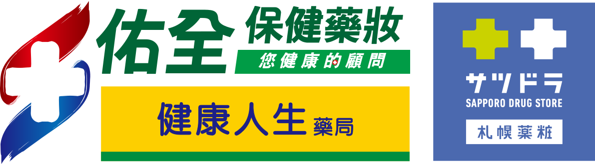
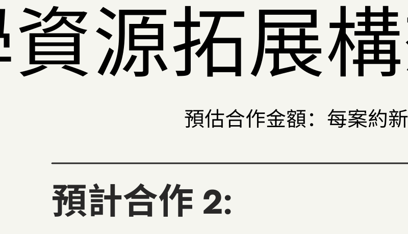
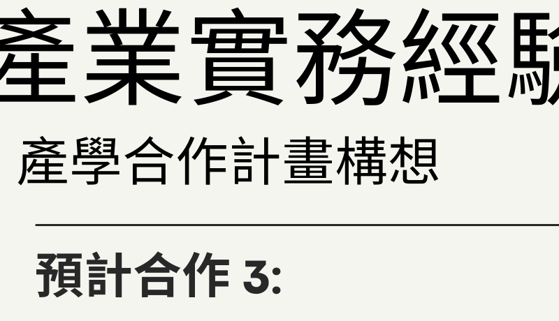

連結業界實務資源，推動雙向產學專案，並同步開發學生校外實習機會，落實萬能科技大學企管系「學用合一」的技職教育核心價值。

合作對象：佑全藥品股份有限公司
擬將 AI 與多準則決策模型導入門市管理，精準優化商品庫存與顧客關係系統（CRM），提供個人化健康推薦，全面提升前線營運效率與銷售價值。

合作對象：新田管理顧問股份有限公司
運用決策模型與數據分析，優化連鎖心理診所的醫病預約媒合與行政資源配置，有效降低營運成本並擴大服務量能，打造數據驅動的現代化管理模式。
合作對象：森稼餐飲有限公司 (稼Meat燒肉)
擬研發智慧AIaaS ERP（包含：智能預約、動態帶位、點餐流程數位化、排班最佳化等），解決餐飲業高變動人流與人力資源調配的痛點，以提升營運效率。

合作對象：光明健康事業股份有限公司 (光明診所)
延續過去在該公司擔任研發工程師時的實務經驗，持續將多準則決策演算法應用於臨床共享決策支援系統（SDM），提升醫療品質與醫病關係。
合作對象：明通化學製藥股份有限公司
結合行銷資料分析與決策模型，協助傳統製藥產業優化產品組合、客群精準定位與通路行銷策略，輔導其推動行銷制度轉型。
產學合作企業不僅是研究夥伴，更是學生實作與就業的搖籃。規劃與所有合作公司推動實習機制，實現學生「在學有薪實習、畢業即就業」。
提供學生參與連鎖藥局門市營運、庫存管理、顧客經營（CRM）及數位行銷實作，並輔導學生考取「門市服務乙級/丙級」證照，培育現代零售管理人才。
提供學生於連鎖心理診所進行行政管理、預約系統操作、公關接待與顧客溝通實習，對接企管系「公關行政管理」專長模組。
提供學生參與電商營運、短影音行銷、智慧 ERP 操作、店務排班、人流管理與現場營運實作實務，高度對接「觀休餐旅微型創業」專長模組。
提供學生參與醫藥行銷策劃、社群媒體經營、媒體採購決策流程以及電商平臺實務，培育新一代企業行銷企劃與專案管理人才。